As a Data Custodian¶
Log into SRE¶
Open browser and use the SRE URL/domain
In the log in page, enter UPI, password and Authy token.
Analysing Data¶
From the project’s main menu, choose Virtual desktop if you need to access and work with the data in your personal folder or shared project folders.
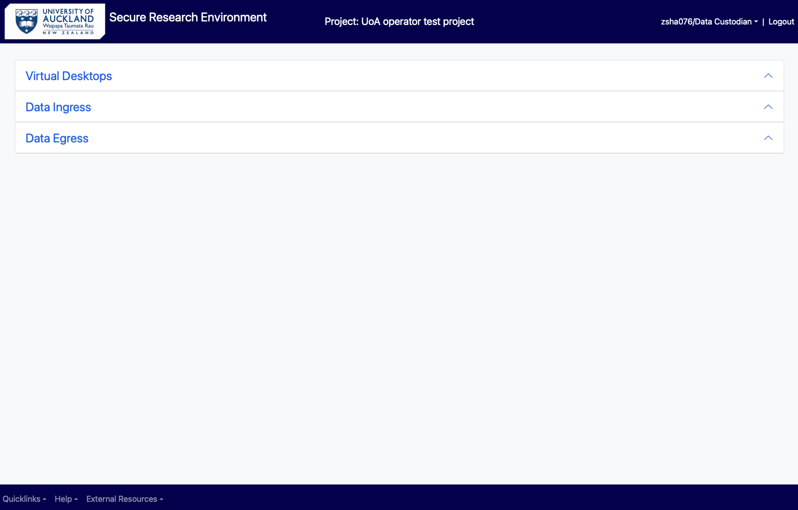
Choose the Data Custodian VM; this will log you into the virtual machine which have the relevant software tools installed for your analysis.
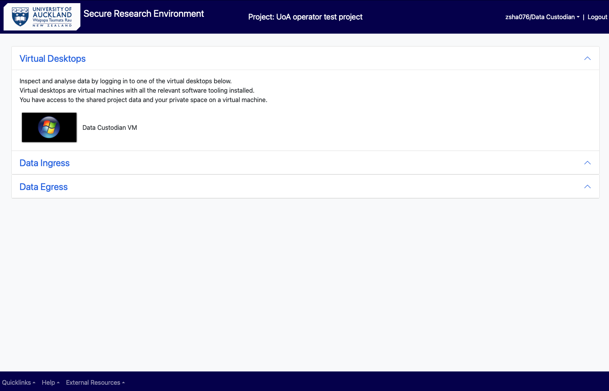
Click on the File Explorer from the task bar at the bottom of virtual desktop, to choose the folder you want. Click on the folder which have the data you need to work with.
In the Research VM, the following list of folders are available to a data custodian:
Project-rw
Project-ro
Project-personal (of all users in the project)
Custodian
Egress approver
Ingress approver
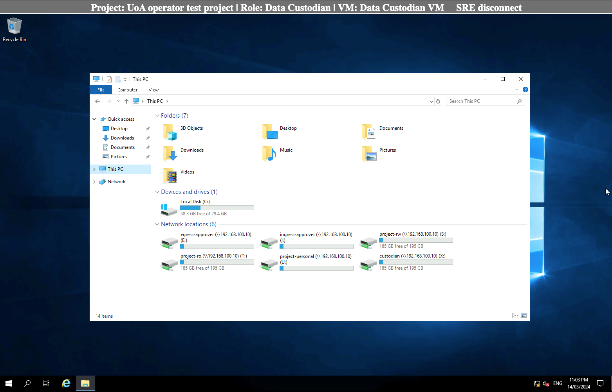
Opening software and running analysis¶
Select your software from the desktop and open the datasets you need to work with from your personal or project’s shared folder. The files and folders can be accessed through clicking on “This PC” and choosing the appropriate folder under “Network locations”.
After finishing the analysis, “Save” your work in the appropriate folder.
If your software is not available in the desktop, click on the Search icon in the task bar, type in and select the software you need.
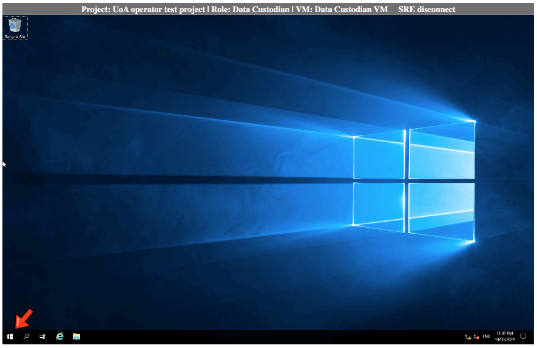
Ingress data directly into SRE¶
A data custodian can import (ingress) data directly into SRE without requiring approval from the ingress approver.
For this, in the main menu select “Data Ingress” and “choose the file” to be uploaded and click on “Upload”. This copies your file from your computer/storage device to the airlock.
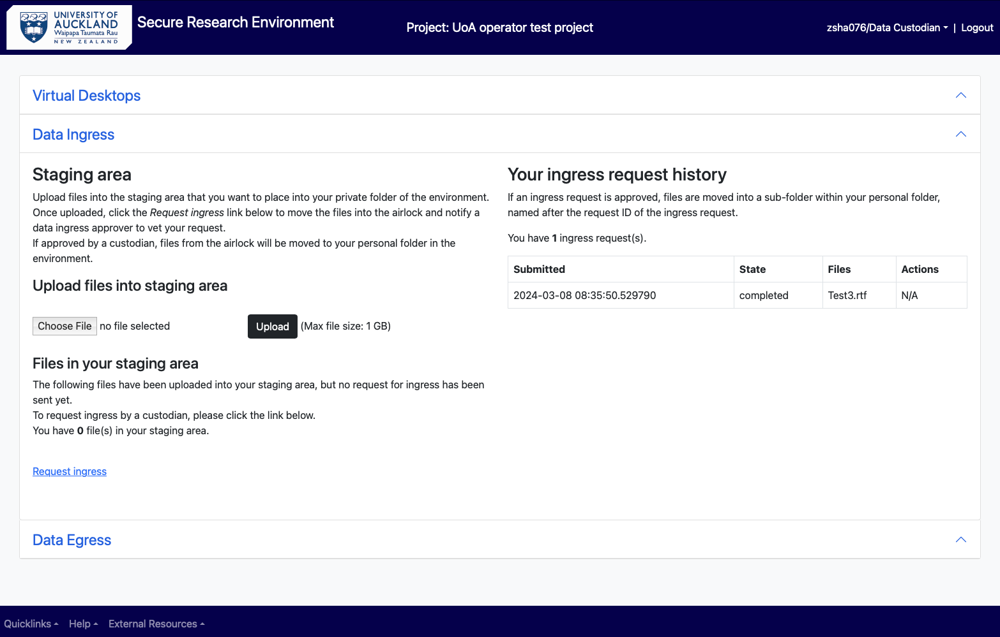
Select “Request ingress” to move the file from the airlock to “Custodian” folder. The request state in the “ingress request history” changes from “creating” to “completed”.
You will also receive two notifications in your email - your file has been uploaded and then that it has been processed.
Egress (export) data out of SRE¶
As a data custodian to download data from the project’s SRE, login to SRE main menu and open the "Data Custodian VM" under "Virtual Desktops".
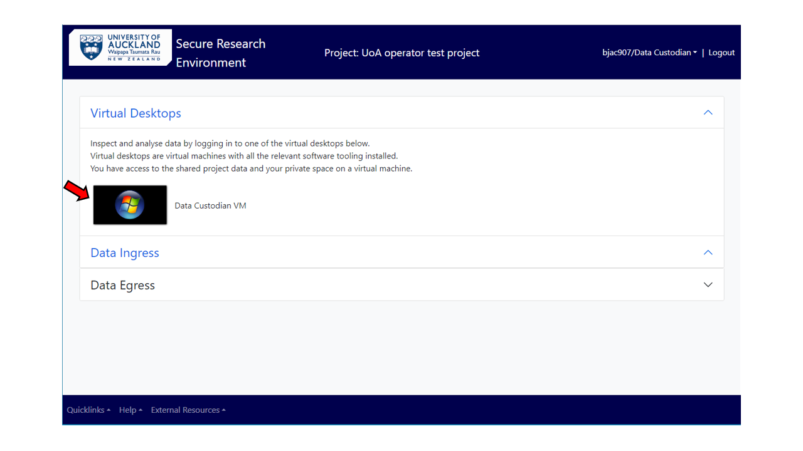
In the virtual machine, open the File explorer and select “custodian” folder under network locations. Select your personal “custodian” folder (if there are multiple data custodians in your project).
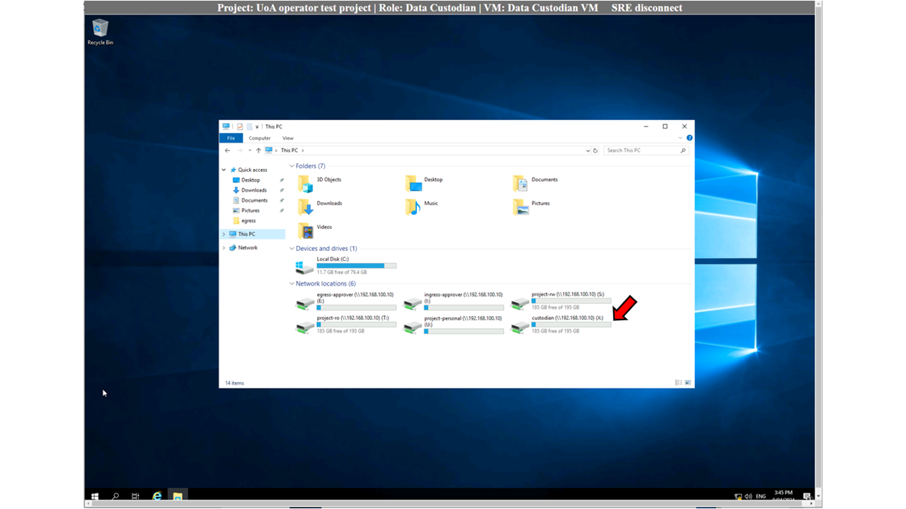
There are two subfolders available, select the “egress” subfolder and copy the data to be egressed in here.
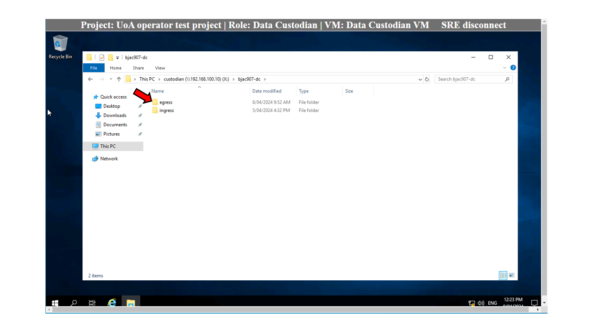
[!NOTE] All the files in this “egress” folder will be copied to be downloaded when a request is submitted. Therefore, if you have data from an earlier egress request in this folder, please delete it before submitting a new request.
Switch back to the SRE main menu, select the Data Egress option, and click on the “Request Egress” button.
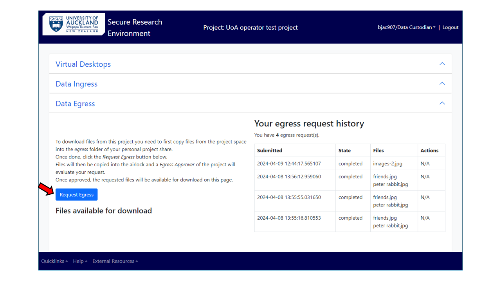
As a data custodian, the egress request will be approved and completed, and the file is made available for downloading bypassing the review process. A notification of the same would be received by the data custodian/s.
Click on the zip file link under the “Files available for download” to download the zipped-up folder. Next go to your local computer’s download folder and double click on the zipped file.
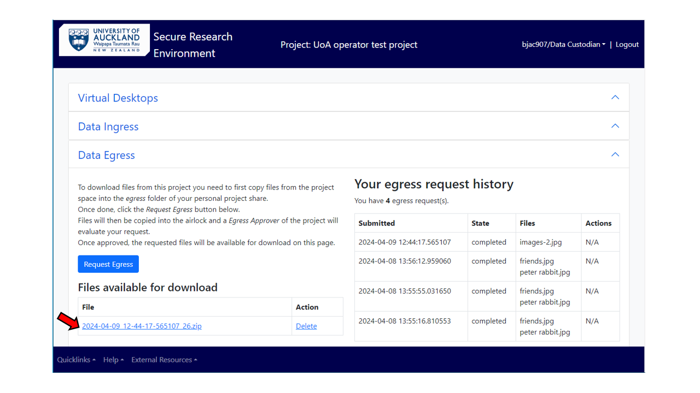
Click on the arrow next to “Unzip to” tab, provide appropriate location and select “Unzip”.
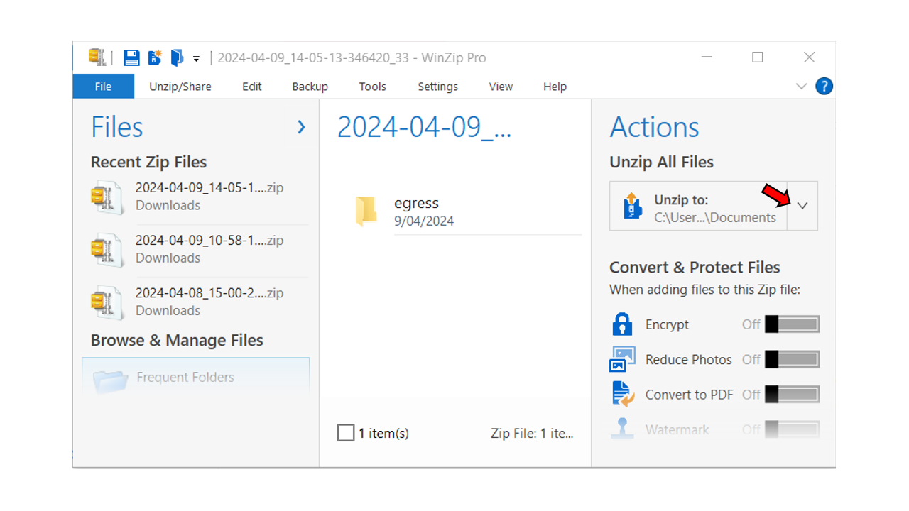
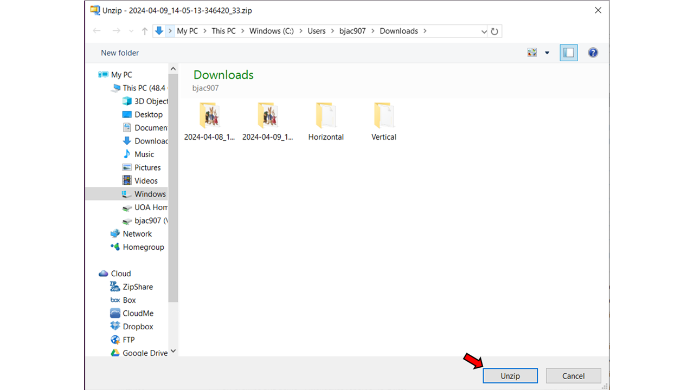
The downloaded file/s can be found in the “egress” folder in this location. All the future unzipped egress files will be in this folder.
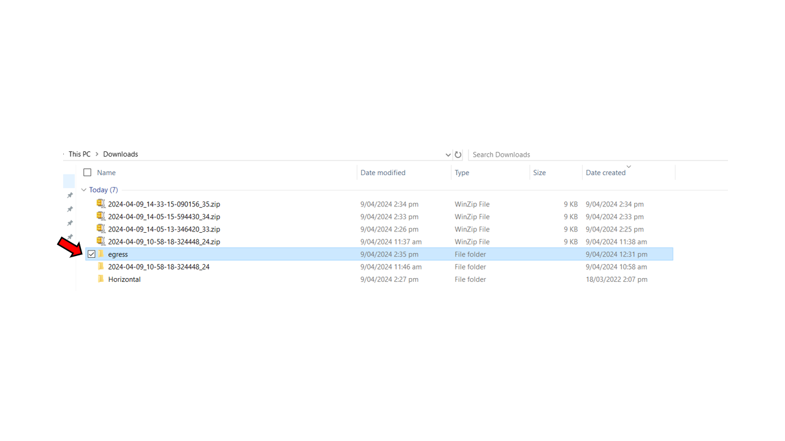
Deletion of datasets¶
As a data custodian, you have read and write access to every folder in your project in an SRE. You may delete data from user’s personal, custodian, ingress-approver, egress-approver, project-ro and project-rw folders.
Request for change of user’s role/permission level¶
As a data custodian, you can request for a specific user’s role to be changed in your project or give them a different permission level (read-write or read-only) in SRE. For this, please send an email to the SRE team.
Request to remove a user from a project¶
As a data custodian, you can request for a specific user to be added or deleted from your project in SRE. Please send an email to the SRE team with the users' details – full name, UPI, email and role in SRE (researcher/data custodian/ingress-approver/egress-approver).